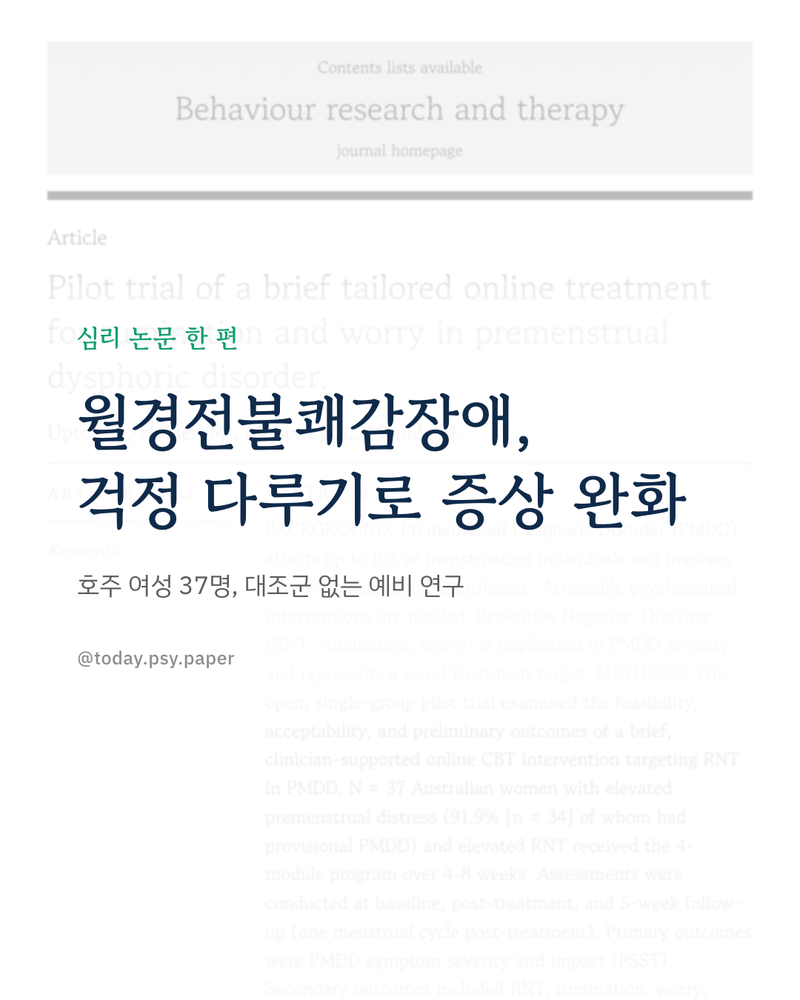
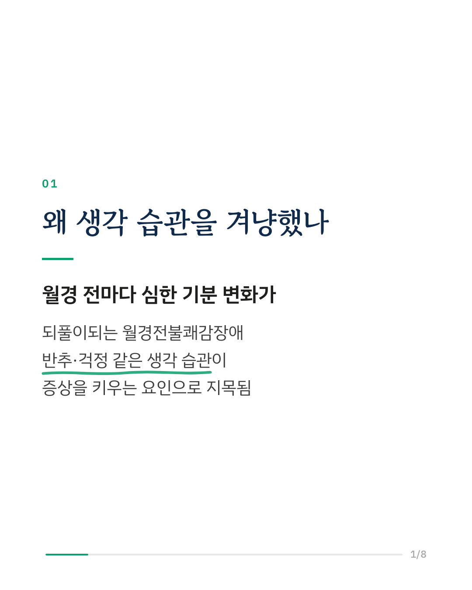
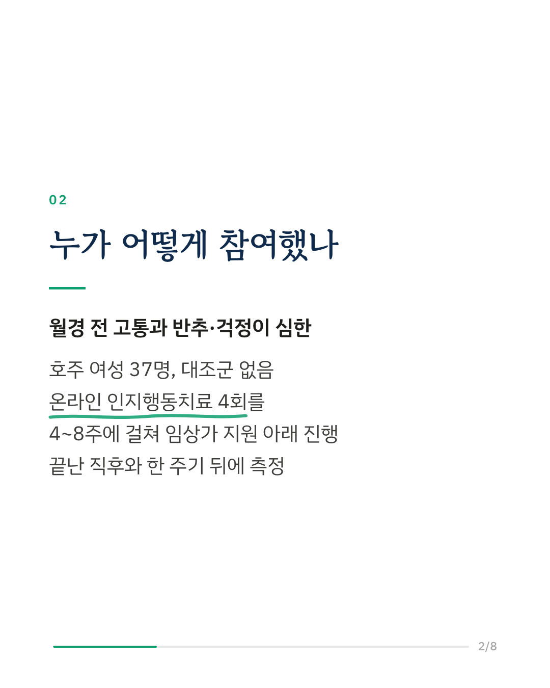
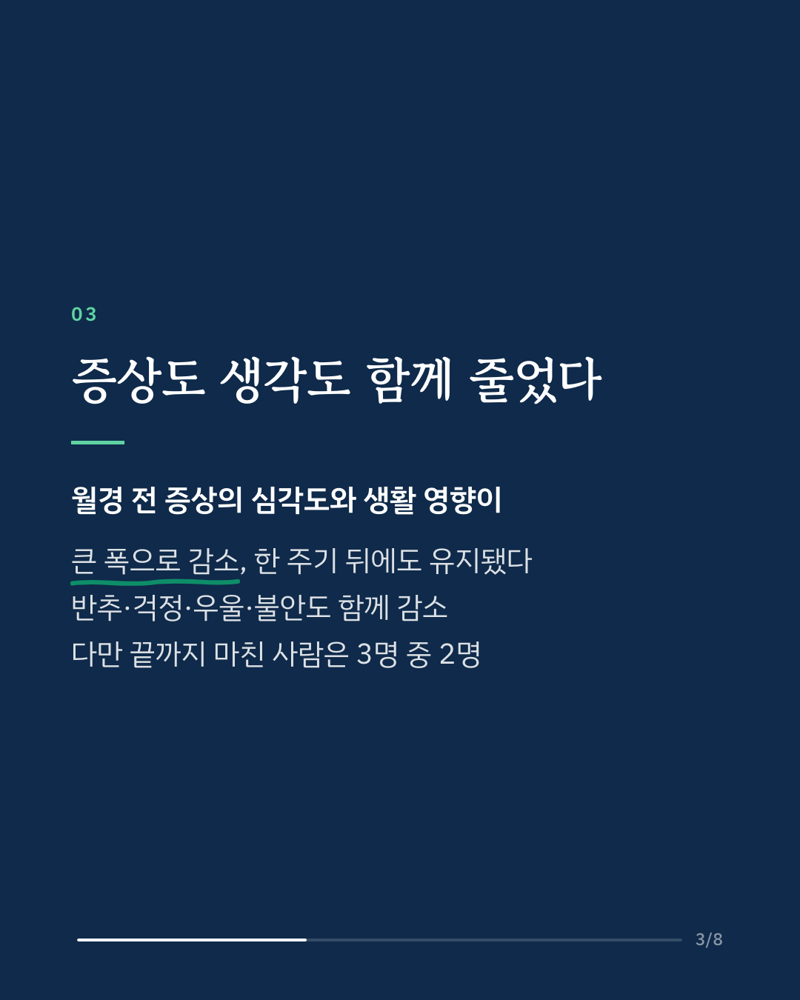
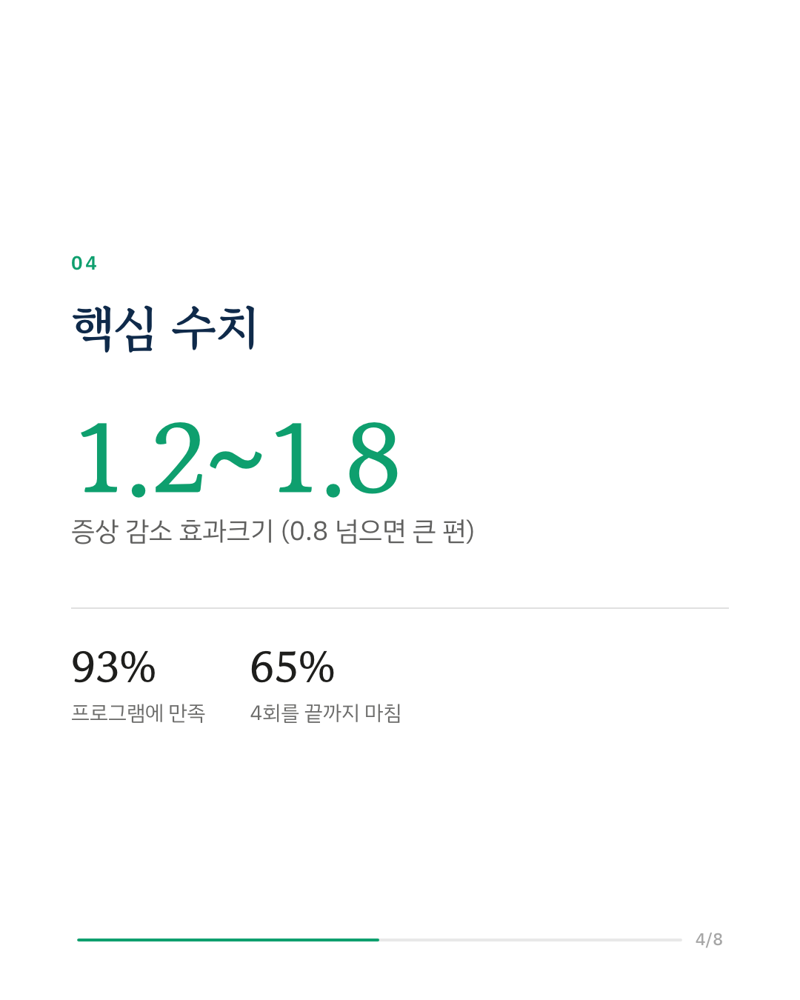
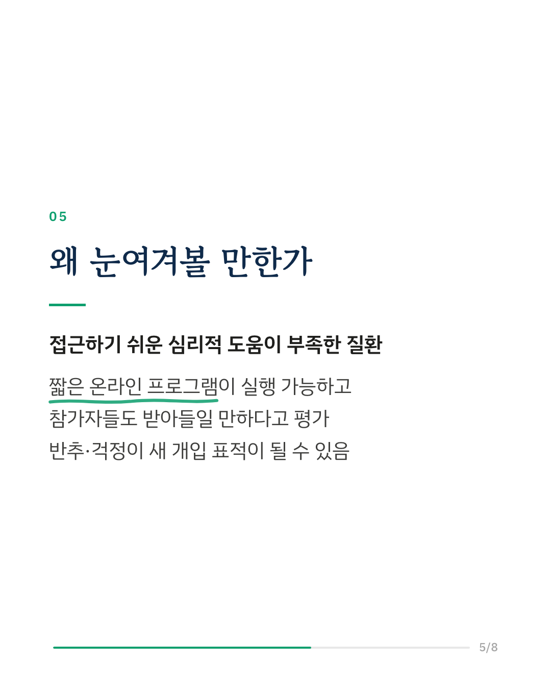
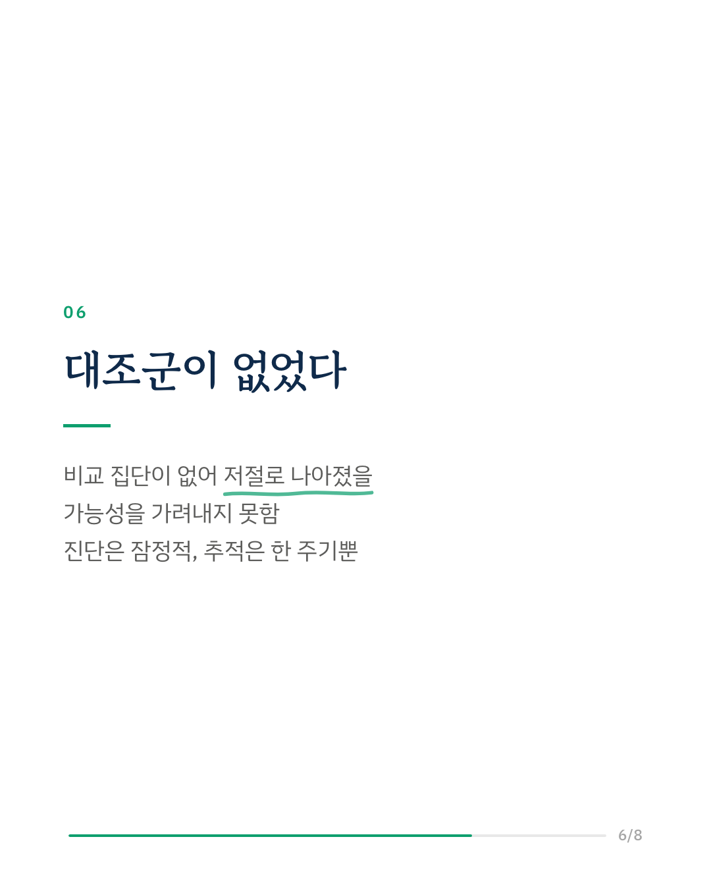
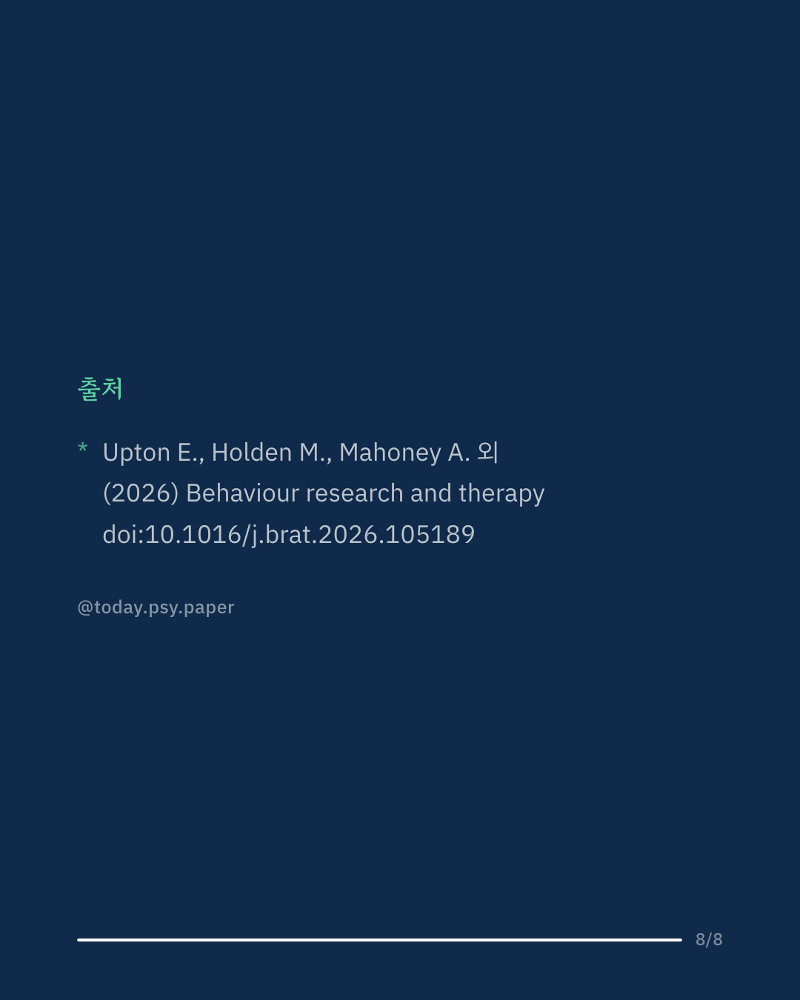

월경전불쾌감장애(PMDD)는 월경 전마다 심한 기분 변화가 되풀이되다가 월경이 시작되면 가라앉는 질환으로, 월경하는 사람의 최대 8%가 겪습니다. 호주 연구진은 반추와 걱정처럼 반복되는 부정적 생각이 이 질환의 증상을 키운다는 선행 연구를 바탕으로, 이 생각 습관을 겨냥한 짧은 온라인 인지행동치료를 만들었습니다. 월경 전 고통과 반복적 사고가 모두 높은 여성 37명이 임상가의 지원을 받으며 4개 모듈을 4~8주에 걸쳐 진행했고, 시작 전, 끝난 직후, 그리고 한 주기 뒤인 5주 후에 증상을 측정했습니다. 프로그램을 마친 뒤 월경 전 증상의 심각도와 생활에 미치는 영향이 큰 폭으로 줄었고, 이 변화는 한 주기 뒤에도 이어졌습니다. 반추, 걱정, 우울, 불안도 함께 줄었고 안녕감과 일상 기능은 좋아졌습니다. 참가자의 93%는 프로그램에 만족했고, 질환을 더 잘 이해하게 됐으며 증상과 생각을 다루는 실용적인 기술을 얻었다고 답했습니다. 다만 4개 모듈을 끝까지 마친 사람은 3명 중 2명이었습니다. 이 연구는 비교 집단 없이 한 집단만 추적한 예비 연구라서, 시간이 지나며 저절로 나아진 부분과 프로그램의 효과를 구분할 수 없습니다. 또한 진단이 전향적 증상 기록 없이 잠정적으로 내려졌습니다. 연구진은 완주율을 높일 방법을 찾고, 증상을 매일 기록해 진단을 확인한 무작위 대조 시험으로 검증하는 것을 다음 과제로 꼽았습니다. Behaviour Research and Therapy (2026), 'Pilot trial of a brief tailored online treatment for rumination and worry in premenstrual dysphoric disorder' DOI: 10.1016/j.brat.2026.105189 #임상심리 #정신건강정보 #심리학연구 #논문리뷰 #월경전불쾌감장애 #월경전증후군 #인지행동치료 #온라인심리상담
python3 publish.py 42994250